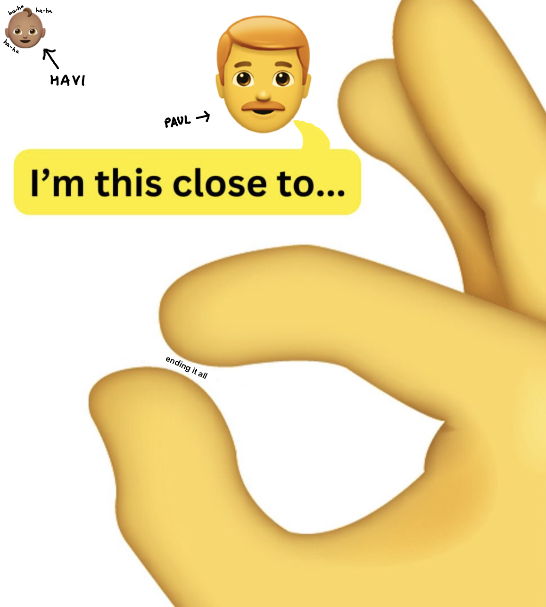

Commish locked up a bye earlier than anyone in Waxball history, Papi scraped in by a tenth, while the rest of the league aren’t practicing social distancing.
As always, I’m your Stat Fag Nic Hamilton, stuffed like a turkey, up the hole of its arse. Let’s wrap up Week 11 of 2026.
PAPI BY A TENTH
Havi (Papi Coop) beat Paul (helloimpaul) 108.16-108.06. Their first two meetings were decided by 39.62 and 22.68 points. This one came down to 0.10, the third-closest game in Waxball history and the closest this season.
It was Havi’s fifth straight win, and it actually clinched him a playoff spot. At 8-3, he can finish no lower than sixth even if he loses out and every team tied with him wins the points tiebreaker. At most five other teams can match or beat his eight wins, given the remaining schedule. This will be Havi's first year out of the Toilet Bowl since the beginning of Waxball, after appearing in the final both previous years, ultimately losing in 2025. We will have a new Shit King this year.
Paul would have climbed above Will with a win, but stays last at 3-8. His playoff hopes are slim but definitely aren’t over, especially since he has more Points For than four of the seven managers sitting at 5-6.
BYE BYE DADDY
Miles E (Daddy Campbell) beat Trav (darryluvr3000) 122.20-105.86 to make it ten straight wins and 4-0 against Trav all-time. Commish is 10-1 and has clinched a first-round bye in Week 11, three weeks earlier than the first bye was guaranteed in 2025, and the only time someone has clinched a bye before the end of the season.
Another record now belongs to Miles, as he breaks his tie with Paul to make it 10 weeks in 1st-place. He had finished a week in 1st only twice before this season, both times in 2024. (An interesting quirk found here, Milo won last year without ever sitting in 1st-place, and he still is yet to move off that mark, along with Trav and Will).
Havi is the only manager who can still catch him, and the lowest Commish can finish is second. The two juggernauts play each other this week.
Daddy is up to 1,475.24pts. He needs 415.53 over the final three weeks to break Erik’s 2024 regular-season record. That’s 138.51 a week, roughly four points above his current average.
THE BATTLE OF 5-6
Three matchups last week dictated our now-compacted table, with seven managers sitting at 5-6. Erik in 4th- has a 246.74pt lead on 10th-place Mosko.
Milo (Pooka Nocua) beat Nic (Stat Fag) 166.60-102.66. It was the weekly high, a new career high for Milo, and the biggest blowout of the week (63.94pts). Last time we met, Milo ended my 2025 title run by an eerily similar 62.74pts. Glad we’re keeping things fresh.
In the week’s Heated Rivalry, Mosko (comeback kid) beat Christian (Steeler Virginity) 96.96-84.76. That’s three straight for Mosko in the series after going 0-2 against Christian in 2024. Christian went from the league’s highest score last week to its lowest this week, a drop of 89.18pts, the largest week-to-week drop in Waxball history.
Erik (Pamela Mari Ohno Dagoberg) finally got one over on Sam (mistahbigdick), winning 111.60-90.94 after dropping their first three meetings over the previous two seasons. Erik and Milo made the biggest jumps this week, up four spots each to fourth and fifth. They’re the only 5-6 managers with winning All-Play records, and they rank first and third in points against.
Blue (blueballs) rebounded from last week’s low with a 125.62-103.00 win over Will (poon messiah). If this had gone the other way, we would have had nine managers on 5-6. Blue ends the week on the podium for the 18th time, the most in Waxball history above Erik with 17. He also holds the best average standings position of 4.13 and moves to 2nd in all-time PF.
TRAV’S SIX TRADES
- Incoming
- Ladd McConkey
- Michael Wilson
- Jonah Coleman
- Kendrick Bourne
- Jadarian Price
- Kyren Williams
- Josh Downs
- Adonai Mitchell
- KC Concepcion Jr.
- Juwan Johnson
- Outgoing
- Emeka Egbuka
- Rashee Rice
- Blake Corum
- Terrance Ferguson
- Ladd McConkey
- Omarion Hampton
- Parker Washington
- Emmett Johnson
- Germie Bernard
- Pat Bryant
- Jadarian Price
THE TRADE WINDOW IS SHUT
Rosters are locked in, as sixteen transactions went through in 2026, up from ten in 2025, a 60% jump. Seven went through in this past week alone, and eleven came in the last two weeks. Trav (8th) led with six deals, Erik (4th) had five, and Will (11th) had four. Eleven managers made at least one trade, with only Mosko abstaining.
Last year, nine managers made a deal. Commish (12th) was in six of the ten trades and Erik (3rd) was in four. 2024 held 16 deals, the same count as this year. Nic (5th) led the 2024 counter with seven trades, followed by Will (7th) with six and Havi (9th) with five.
WEEK 12
HEATED RIVALRYChristian5-6 · 7th
WEEK 12 PREVIEW
Week 1 2026 rematches are here.
Nobody can clinch a playoff spot this week, after Havi did so in Week 11. Commish already has his bye and clinches the No. 1 seed with a win against Havi. Havi can clinch the other bye spot by beating Commish, if Blue loses.
Paul is the only manager who can clinch a Toilet Bowl spot this week with a loss to Will.
4th-place Erik looks for revenge on both the 2024 Championship matchup and on Week 1 of this year, when he fell to Christian by 6.56pts. Erik holds the points tiebreaker over everyone on 5-6, including his opponent who sits in 7th.
In Week 1 of this year, Havi handed Miles his only loss of the season, before Commish went on to win 10 on the trot. Havi now holds a 5-game win streak and has the opportunity to clinch the second playoff bye spot with a win and a Blue loss.
Milo brings the weekly high and a 3-0 all-time record into an unbeaten matchup with Mosko. They both sit at 5-6, albeit with Milo holding a 225.52PF advantage on Mosko. In Week 1, Mosko put up the week's lowest score, his first of what would become four weekly lows this season, tying the single-season record with Nic in 2024.
My only positive game this season was in a Week 1 weekly-high-scoring win against Blue. It's only been downhill since then. A win for Blue this week would put him in the first week playoff bye conversation, and would force me into the Toilet Bowl picture.
With a Rivalry Score of 96/100 and both managers on 5-6, Trav and Sam's matchup could prove massive leading into the playoffs. Sam has only won once in five meetings, with Trav averaging 146.34pts over all five games.
We go from a battle at the top to a battle at the bottom, as 12th-place Paul clinches a place in the Toilet Bowl bracket with a loss against 11th-place Will. A Paul win moves them even on record and, with Paul currently holding a 19pt PF advantage on Will, would move poon messiah into last place.
WEEK 12 KICKS OFF 🚨WEDNESDAY🚨 WITH PACKERS @ RAMS AT 8 P.M. ET. BEARS @ LIONS OPENS THANKSGIVING DAY AT 1 P.M. ET WITH GAMES RUNNING THROUGHOUT THE ENTIRE WEEKEND. CHECK YOUR LINEUPS BEFORE YOU CHECK THE TURKEY.
CHECK OUT YOUR MANAGER DATABASE AND RIVALRIES FOR THE LATEST WAX STATS.
UNTIL NEXT TIME, HERE’S ME SAYING GOODBYE. GOODBYE!